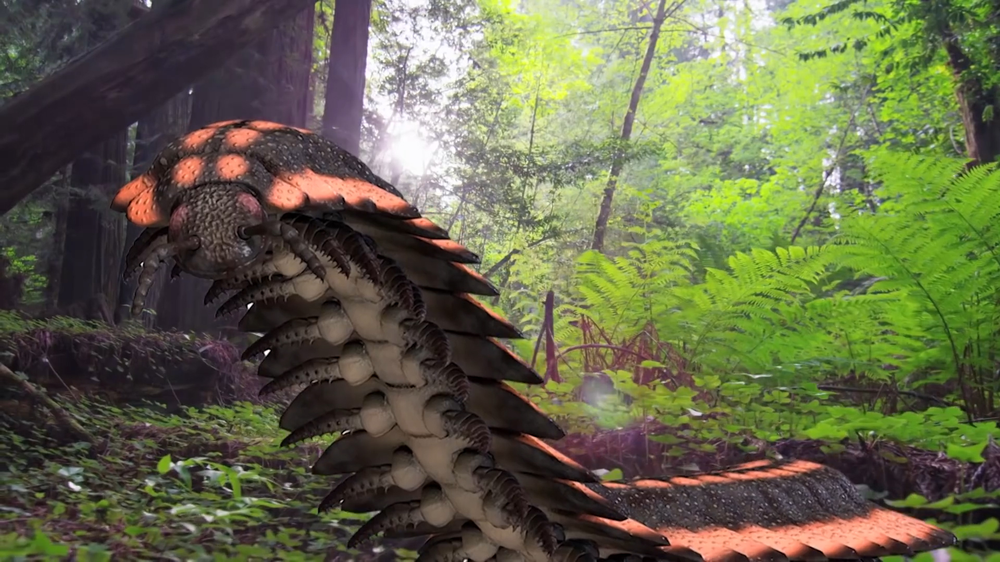

Arthropleura
Cuốn Chiếu Khổng Lồ kỷ Than Đá
Tổng quan
Kỷ
Carbon
Họ
Arthropleuridae
Chi
Arthropleura
Dài
2.6 m
Rộng
55 cm
Nặng
50 kg
Thức ăn

Arthropleura là một chi động vật chân đốt đã từng tồn tại trong kỷ nguyên của động vật không xương sống khổng lồ - kỷ Than Đá, chúng có danh hiệu là loài động vật không xương sống trên cạn lớn nhất từng sống.
Nguồn: wikipedia.org
Phân bố
Khu vực miền Bắc Mỹ và Châu Âu
Thông tin thêm về Arthropleura
Kỷ nguyên
Arthropleura sống trong kỷ Than đá từ 345 đến 280 triệu năm trước. Hóa thạch của loài động vật không xương sống này đã được tìm thấy ở nhiều địa điểm khác nhau ở Bắc Mỹ và Châu Âu xung quanh đường xích đạo.
Vì các nhà cổ sinh vật học thường tìm thấy các hóa thạch liên quan đến đá phiến sét mái nhà, nên những giải thích trước đó cho rằng Arthropleura sống ở đầm lầy ẩm ướt. Tuy nhiên, bằng chứng sau đó mô tả rằng sinh vật này có thể sống ở nhiều môi trường và cảnh quan khác nhưng sẽ ưu tiên những địa điểm có thảm thực vật phát triển tốt.
Tên khoa học
Tên Arthropleura của loài động vật không xương sống khổng lồ này có nghĩa là "Xương sườn có khớp nối" trong tiếng Hy Lạp. Cái tên này đề cập đến nhiều đoạn khớp nối và các tấm cứng bao phủ cơ thể hẹp của loài động vật không xương sống này.
Ngoại hình
Vì không có hóa thạch hoàn chỉnh nào của những hóa thạch lớn này được tìm thấy cho đến nay, nên việc giải thích chúng trông như thế nào đã gây tranh cãi. Tuy nhiên, hầu hết các chuyên gia đều đồng ý rằng Arthropleura trông rất giống loài cuốn chiếu và loài rết thời hiện đại nhưng lớn hơn đáng kể.
Cơ thể phẳng của Arthropleura bao gồm khoảng 30 đốt, mỗi đoạn được bao phủ bởi hai tấm bên và một tấm trung tâm. Tỷ lệ của các cặp chân trên các phân đoạn cơ thể là khoảng 8:6, tương tự như một số động vật nhiều chân ngày nay.
Kích thước
Nhờ môi trường giàu oxy của kỷ Than đá và thiếu động vật ăn thịt có xương sống, các loài động vật chân đốt như Arthropleura có thể phát triển đến một kích thước đáng kể. Trên thực tế, nó được coi là loài động vật không xương sống sống trên cạn lớn nhất, có kích thước từ 0.3 đến 2.6 mét (gần bằng kích thước của một chiếc ô tô nhỏ) và chiều rộng khoảng 55 cm. Các ước tính về kích thước của loài động vật chân đốt này cho thấy khối lượng cơ thể của nó có thể lên tới 50 kg.
Chế độ ăn
Những giải thích ban đầu cho rằng Arthropleura là một loài ăn thịt. Các nghiên cứu sau đó cho thấy điều này khó xảy ra. Một sinh vật có phần miệng khỏe để nhai hoặc nghiền nát con mồi sẽ bảo tồn một số hoặc tất cả các bộ phận đó trong di tích hóa thạch. Điều này và các yếu tố khác đã dẫn đến kết luận rằng loài động vật chân đốt khổng lồ này rất có thể là loài ăn cỏ.

Trong một hóa thạch được các nhà khoa học ở Scotland phục hồi vào thế kỷ 20, phần còn lại của cây rêu khổng lồ được tìm thấy trong ruột của con vật này. Các chuyên gia không chắc liệu việc bảo quản xảy ra tình cờ sau khi sinh vật chết hay đó là bằng chứng về những gì nó đã ăn khi còn sống. Nếu chúng ta giải thích chế độ ăn uống của Arthropleura tương tự như chế độ ăn uống của loài cuốn chiếu ngày nay, thì nó sẽ sống trên tán lá, bào tử và hạt.
Khám phá
Các nhà cổ sinh vật học đã không tìm thấy bất kỳ hóa thạch hoàn chỉnh nào của xác Arthorpleura. Thay vào đó là vỏ của chúng còn sót lại sau khi lột xác (exuviae) được phát hiện phổ biến hơn. Các nhà cổ sinh vật học đã tìm thấy những vỏ hóa thạch này ở nhiều địa điểm khác nhau trên khắp Bắc Mỹ, Đức, Bỉ, Cộng hòa Séc và Pháp.
Một cách phổ biến khác mà các hóa thạch của Arthorpleura được bảo tồn là dấu chân hóa thạch. Chúng thường xuất hiện dưới dạng các hàng bản in dài, song song cho thấy cách con vật di chuyển dọc theo nền rừng. Chúng ta có thể sử dụng những dấu vết này để ước tính kích thước và các thói quen khác của con vật, chẳng hạn như cách nó di chuyển trong cuộc sống.
Các mối đe dọa
Xem xét kích thước của loài động vật chân đốt này và khi nó còn sống, có lẽ nó không có nhiều kẻ thù tự nhiên (nếu có). Nó là loài động vật không xương sống trên cạn lớn nhất được biết đến và sống cùng với các loài côn trùng khổng lồ khác như chuồn chuồn khổng lồ và gián thời tiền sử.
Dựa trên những phát hiện gần đây hơn, sự tuyệt chủng của Arthropleura thường liên quan đến những thay đổi khí hậu quan trọng xảy ra trong kỷ Permi. Khu vực xung quanh đường xích đạo nơi loài động vật này sinh sống trở nên khô hạn hơn và không còn thuận lợi cho chúng. Sự gia tăng của động vật bốn chân cũng có thể góp phần vào sự tuyệt chủng của chúng.